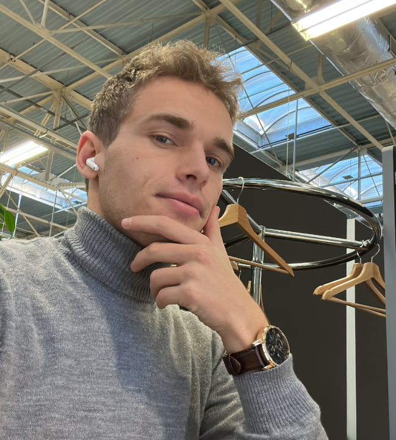

Alexis Soltysiak
Ingénieur compétent, passionné par l'IA et les données, j'excelle dans la résolution de problèmes complexes. J'aime concevoir et déployer des pipelines de données ainsi que réaliser des analyses approfondies pour mener à bien chaque mission avec efficacité et innovation.
Ce que je propose
- Solutions IA : Développement de modèles de machine learning et de deep learning.
- Analyse de Données : Exploitation statisitque et visuelle des données pour des insights pertinents.
- Pipelines / Cloud : Création de pipelines robustes et évolutives dans le cloud
- Développement de Bots : Conception et implémentation de bots intelligents pour automatiser des tâches.
Prêt à collaborer ?
Contactez-moi pour discuter de vos projets et de comment je peux contribuer à leur réussite.